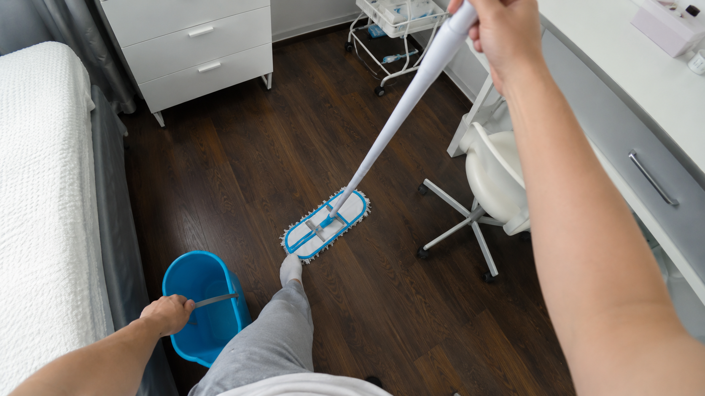
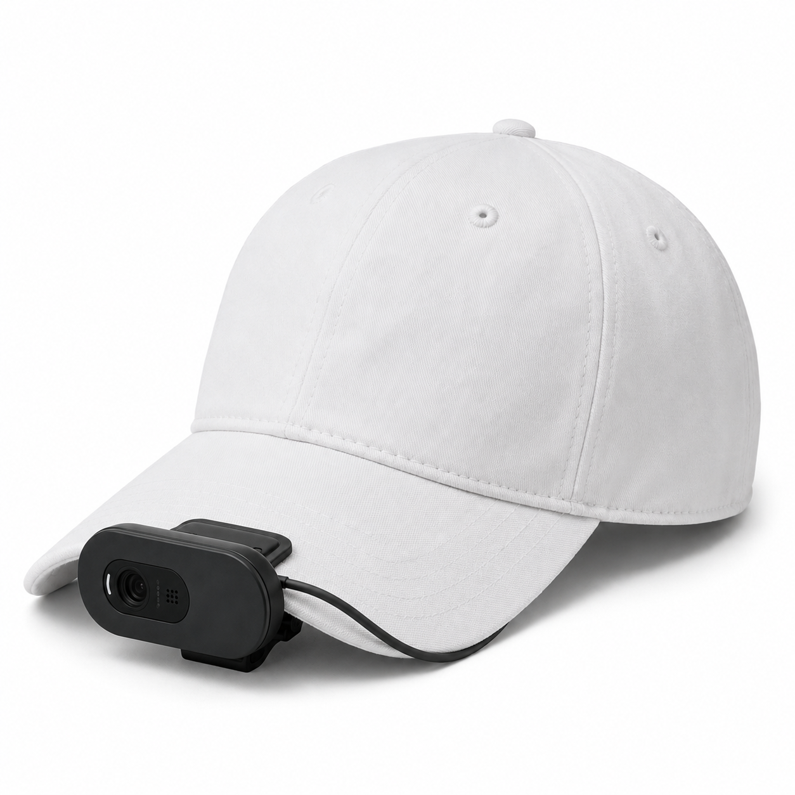
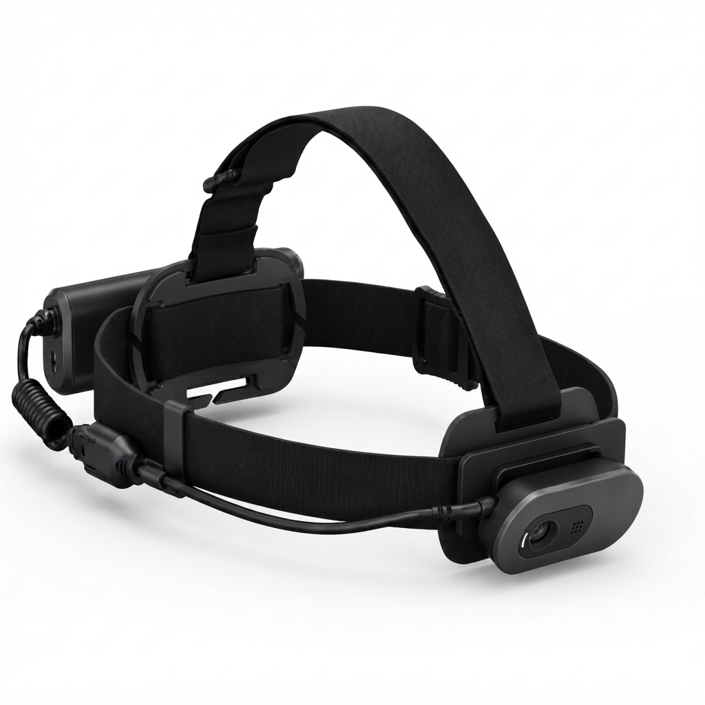

Cleaning
Surface prep, tool handling, spill response, and room-to-room navigation across varied sites.
Recording infrastructure for cleaning crews, restaurants, and university labs — built to supply robotics teams with real, continuous, first-person data.
01 — The Problem
Simulation and internet video can't capture the clutter, contact, and improvisation of real manual work. The manipulation data robotics teams need most — hands on tools, under pressure, in messy rooms — is the hardest to collect, and it doesn't exist at scale.
It has to be captured on site, from the worker's own point of view, over real shifts.
02 — What We Do
Nero equips local businesses with wearable recording gear worn by the people already doing the work. Every shift becomes hours of first-person footage — real tasks, real environments, real hands.
03 — Where We Capture

Surface prep, tool handling, spill response, and room-to-room navigation across varied sites.
Food prep, plating, and service work carried out under time pressure and constant change.
Precision manipulation, instrument handling, and structured, repeatable protocols.
04 — What We Handle
of on-site logistics, hardware, and privacy compliance — handled for you.
Full deployment run on location, start to finish.
Units shipped, fitted, and swapped across every site.
Every clip processed for PII blurring before delivery.
Biometric and property consent secured for every site.
05 — The Hardware
Designed and manufactured in-house.
Low-profile and lightweight — built to disappear into a normal shift, not distract from it.


A secure, hands-free fit for high-mobility tasks and extended, continuous-capture shifts.
06 — Specifications
07 — Custom Hardware
The standard unit covers most engagements. When a partner's training needs depth, a wider stereo baseline, or a synchronized multi-camera rig, we design and build it — including full stereoscopic recording hardware for contracted customers.
08 — Positioning
From cleaning routes to research benches, gear is fitted to the site, not the other way around.
Standard monocular units today, custom stereoscopic and multi-camera builds on contract.
Curation is matched to the exact manipulation task a partner's model is trained on.
09 — Working Together
Define the task, the environment, and the camera spec — we deploy gear and deliver a matching dataset.
Subscribe to a continuous feed of egocentric footage across our existing verticals.
Lock in dedicated capture within a business category, built around your roadmap.
10 — Summary
Standard units today, custom builds — stereoscopic included — whenever a partner needs them.
Data comes from working cleaning crews, kitchens, and labs — not staged demonstrations.
Every frame is captured from the worker's own point of view — the perspective robots need.